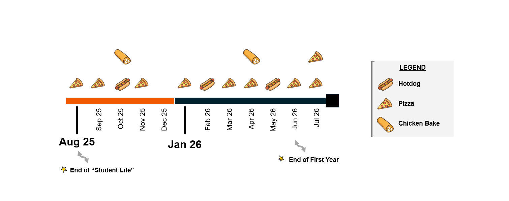
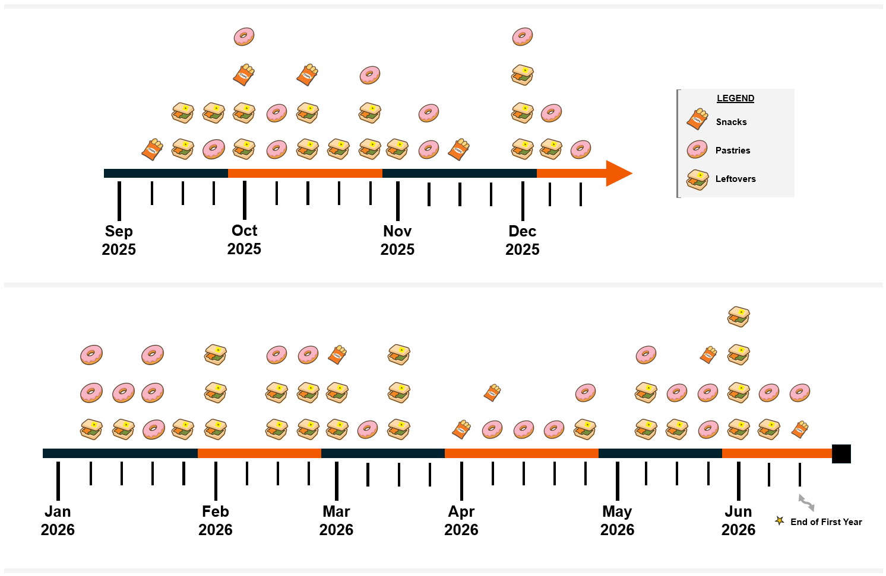
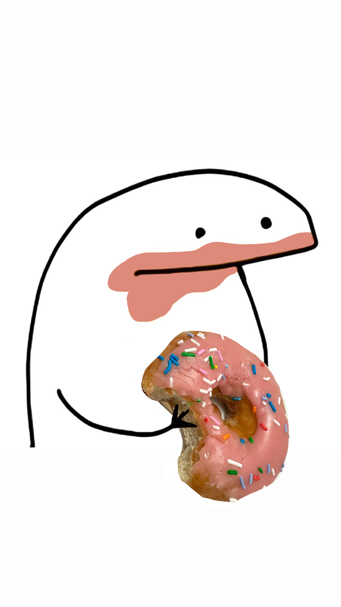

TLDR: I love collecting data about my interactions with the world. Here are a few, important (to me), stats from my first year as a professor.
I find that sharing food with people is a small way to get to know others. As someone who has spent a not-insignificant amount of time in the college academic setting, I can vouch for this as a potential way to build community. Sharing a snack, bringing leftovers from a meeting, or setting out something others can enjoy are easy ways to get to know people more personally. You don't like pickles because of some childhood trauma? … Interesting. You like a particular type of chocolate? … Noting that for gift season. In the end, we're all just trying to sustain ourselves through days we're often not ready to face.
As a student, food (free food, especially) would often be the factor that decided what extracurriculars I'd attend. Food was often the impetus for many activities that, in hindsight, were probably way too important to leave to chance; pizza at club meetings, formal dinners with alumni, and shared meals with potential employers. I remain appreciative of the opportunities this shared snacking presented.
Now, as a faculty member, I find a similar but different relationship with shared food. I still judge the importance of an event based on what was ordered. But I find myself in situations where I can be a more significant contributor to the shared food situation (through applied workshops where students eat and learn). And I find myself in a space where my colleagues bring in snacks, food, and leftovers to share.
I also love collecting random data, so, as a follow-up to my PhD Milestone Timeline w/ Costco Hotdogs and Pizza Slice Intake, I first present an update - Costco hotdogs, pizza, and now also included, chicken bakes over the year (Figure 1). Second, I present an alternative perspective: that of a professor with many colleagues who love sharing food. I present a brief lookback at snacks and leftovers that I partook in at the office. I call this graphic Shared Snacking and Leftovers (Figure 2).I believe it is important to present this while also acknowledging that food insecurity among college students is prevalent [1, 2] and that much more remains to be done to better support our students. Each of the institutions that has been part of my academic journey have initiatives to support basic food needs (Cal Poly, George Mason University, Cal Poly Pomona) and I am glad to support the work they do.
The data I present are drawn from a variety of tracking tools that I've developed and consistently used over the years.
{kind=link}

{kind=link}

Figure 3 is a reference photo of me with a donut, in contrast to last year's photo of me with a hotdog.
{kind=link}

Click on the images above to view the full image. All images are © Ashish Hingle.